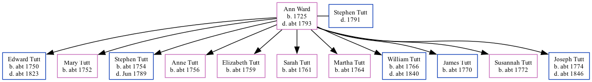

Ann Tutt (née Ward) 1725 - c1793
[ Home ] | [ Calendar ] | [ Surnames Index ] | [ Family History ]Ann Ward, the 5 times great-grandmother of Nigel Horne, was born in Smeeth, Kent, England in 1725 and married Stephen Tutt (with whom she had 11 children: Edward, Mary, Stephen, Anne, Elizabeth, Sarah, Martha, William, James, Susannah and Joseph) in Smeeth on Aug 27, 17501.
She died c. 1793 and was buried in Aldington, Kent, England on Nov 5, 1793.
Children
- Edward was born c. 1750
- Mary was born c. 1752
- Stephen was born c. 1754
- Anne was born c. 1756
- Elizabeth was born c. 1759
- Sarah was born c. 1761
- Martha was born c. 1764
- William was born c. 1766
- James was born c. 1770
- Susannah was born c. 1772
- Joseph was born c. 1774
Citations
- England Marriages 1538-1973 - Findmypast
Family Tree

Map
Generated by ged2site. Last updated on Feb 28, 2025